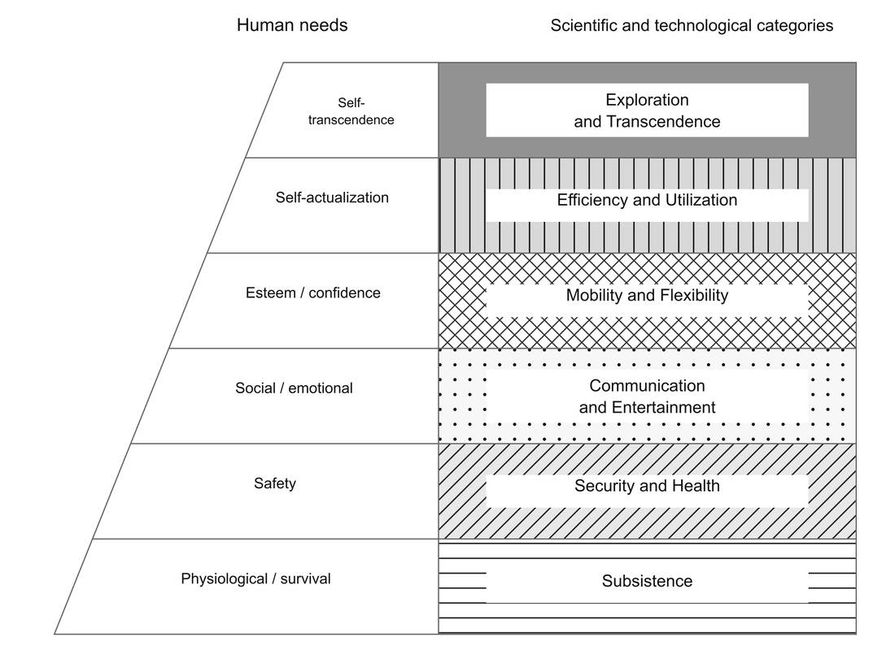
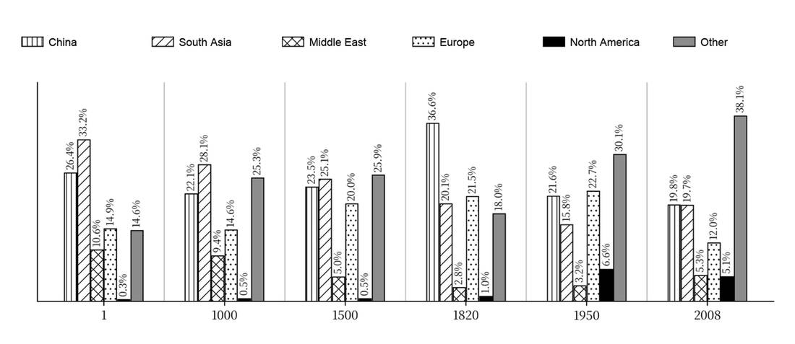

Classifying science and technology by human needs — what do the six categories cover?
To examine the long-term structure of scientific and technological development, we have compiled the Database of Major Scientific and Technological Achievements. The version used here contains 3,170 entries; the appendix explains how it was constructed. Classifying the entries by time, region, and need allows us to examine their accumulation, origins and diffusion, and contributions to human life.
The way we classify knowledge changes the connections we see. Classification by subject brings mathematics, astronomy, physics, and other fields into separate bodies of knowledge, making it easier to trace their concepts, methods, and questions. Classification by use brings knowledge from different fields together around farming, medicine, or warfare. A method of measurement may belong to a discipline’s accumulated knowledge while also serving navigation, building, and land administration. Classification is a choice of viewpoint that gives otherwise scattered historical material a recognizable structure.
This book seeks to understand how science and technology respond to human desires and change social life. Alongside disciplinary distinctions, it therefore classifies achievements by need. This brings together achievements that differ in subject and technical form but serve related purposes. Medicines, surgery, and structural improvements to housing can all enter a discussion of security and health. Wheels, ships, and aerodynamics can be connected through their contribution to mobility. The framework helps us examine the shared value of science and technology and compare the problems toward which different societies directed their creativity.
Moving from a theory of needs to a classification of achievements requires translating psychological aspirations into observable activities and outcomes. The book retains the themes of survival, safety, communication, and transcendence. Drawing on technological history, it develops the autonomy and command over circumstances associated with esteem and confidence into “Mobility and Flexibility,” and the effective use of abilities to achieve goals associated with self-actualization into “Efficiency and Utilization.” These adaptations yield the six categories in Figure I-2. They express the book’s interpretation of scientific and technological value and provide a common framework for its narrative and statistical comparisons.
Subsistence: Corresponding to physiological and survival needs, this category includes the knowledge and technologies used to obtain food, clothing, and other necessities, such as hunting, farming, the domestication of plants and animals, and textile production. They sustain individuals and allow populations to continue. Natural conditions influence ways of life, while innovation expands food supplies and the number of people an environment can support. The desire to survive is widely shared; the means of fulfilling it vary with geography and history.
Security and Health: Corresponding to safety needs, this category includes medicine, drugs, housing, weapons, and other knowledge and technologies that protect life and reduce disease and external threats. Individuals seek protection from illness, the elements, and violence. Population concentration makes disease prevention, defense, and construction collective concerns. These innovations connect the protection of individual lives with social organization and profoundly affect life expectancy and population size.
Communication and Entertainment: Building on needs for belonging, social contact, and emotional fulfillment, this category includes writing, numbers, toys, film and television, computers, and the Internet: knowledge and technologies for recording, calculating, and communicating information and enriching emotional life. They support personal expression and interaction, cultural transmission, trade, governance, and cooperation. Writing and calculation both meet the need to connect with others and provide foundations for complex societies.
Mobility and Flexibility: This category translates the autonomy and capacity to act associated with esteem and confidence into the movement of people and goods. It includes vehicles, ships, aircraft, and the sciences that support them. A wider range of movement gives people more choices and access to distant resources, markets, and partners, strengthening their ability to shape their circumstances. Personal aspirations for freedom of movement join commercial, military, and administrative needs in driving transport innovation. This correspondence helps us examine the capabilities that mobility technologies confer.
Efficiency and Utilization: Following the theme of developing abilities and achieving goals within self-actualization, this category includes materials, energy, machines, and related sciences. They enable fuller use of resources, raise productivity, reduce costs, and make previously impractical plans achievable. The pursuit of wealth and accomplishment, the expansion of business, and the desire for better living conditions all motivate such innovation. Greater productive capacity, in turn, supplies the material means for more people to pursue education, health, entertainment, and exploration.
Exploration and Transcendence: This category corresponds to the desire to extend understanding beyond immediate utility. It includes investigations of natural phenomena and the instruments made to conduct them. Curiosity, the desire to know, and an attraction to a larger world lead people to ask questions that have no immediate practical application. These activities enrich intellectual life and change how people understand the world. Much later, they may open new paths for technology and industry. Innate curiosity and society’s valuation of exploration jointly shape their development.
The six categories are closely connected. Transport carries food and serves warfare; efficiency improvements can benefit every category; knowledge gained through exploration can find new practical uses. Classification considers the most prominent value of each achievement, while the historical discussion follows the ways these values intersect. The levels in the diagram organize questions. Different categories may emerge and develop together, and their sequence may vary with culture, institutions, and historical opportunities.
Figure I-2. Connections between the needs framework drawn from Maslow and the book’s six categories. Categories may overlap; the levels organize the analysis.

A needs model helps explain motivation, but classification requires evidence that can be checked. Creators may have several aspirations, while sponsors and users may have different goals. Complete records of motivation rarely survive for ancient achievements. The database therefore classifies entries chiefly by the needs they addressed and their principal uses when they appeared. This turns a psychological discussion into a workable historical inquiry: What did an achievement enable people to do? What problem did it solve? Which need did it primarily meet? The chapters then use historical evidence to examine individual motives and social incentives in particular cases.
When an achievement serves several needs, we assign its primary category according to its most prominent use at the time. Where an entry crosses categories and no clear distinction is possible, the database’s established rule places it under Efficiency and Utilization. The chapters discuss particular uses and how they change.
Uses evolve. The pinhole imaging described in the Mohist Canons belongs to Exploration and Transcendence as an investigation of an optical phenomenon. Photography developed around imaging later served chiefly to record and communicate information and belongs to Communication and Entertainment. Knowledge acquires new value when it enters new combinations.
Classification requires judgment and repeated checking. Contributors consulted historical sources, discussed the value of achievements, and worked toward consistent rules. Even as agreement approached consensus, about 3% of entries remained disputed. Every achievement receives the same statistical weight, permitting comparisons across regions and periods on a common basis. The framework reveals shifts in the focus of innovation, the ways categories support one another, and regional differences in their composition. The historical narrative further examines the social impact of particular achievements.
Regional comparisons follow a consistent convention. The database reports chiefly on China, South Asia, the Middle East, Europe, and North America, grouping the remaining areas as Other. The appendix explains the treatment of transboundary regions and changing historical territories. Figure I-3 shows these regions’ shares of world population at selected historical dates; its caption identifies the population source.
Figure I-3. Regional shares of world population at selected historical dates.

Source: Maddison Database 2010; regions are aggregated according to the book’s geographical conventions.
This article is from Part I, Desire and Innovation, of The Power of Desire: A Brief History of Scientific & Technological Innovation (second edition) — Six Categories of Technological Value. Previous: Maslow Hierarchy of Needs Innovation. Next: Ten Thousand Years of Innovation. See the full serialization index.
More from Part I: Maslow Hierarchy of Needs Innovation · Ten Thousand Years of Innovation · Three Great Technological Revolutions · Population Size and Technological Innovation